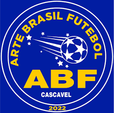

Campeonatos De Interior

Além da prática do jogo, a escolinha de futebol também ensina valores e que as crianças devem respeitar as regras e o espírito da coletividade.
Como em qualquer esporte, a escolinha de
futebol não é apenas um lugar para meninos. As meninas têm as mesmas possibilidades e benefícios com o jogo.